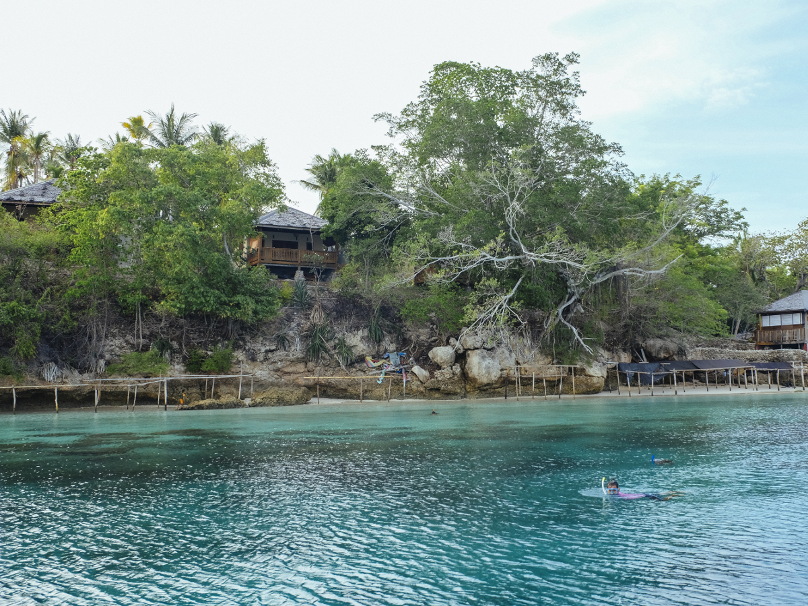
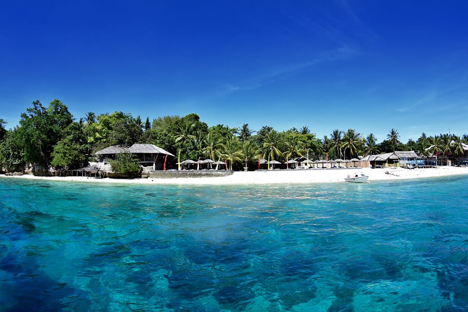

Pantai Tanjung Karang
Pantai Tanjung Karang adalah surga pesisir di Donggala, Sulawesi Tengah, yang menawarkan pasir putih lembut, air laut jernih, dan kehidupan bawah laut yang menakjubkan.
Hanya 40 menit dari Kota Palu, pantai ini menjadi favorit wisatawan untuk berenang, menyelam, atau sekadar bersantai menikmati suasana tropis.

Lokasi
- Pantai Tanjung Karang terletak di Kabupaten Donggala, sekitar 40 menit dari Kota Palu. Akses ke pantai ini mudah dengan kendaraan roda dua atau empat, dan banyak digunakan sebagai destinasi wisata keluarga maupun wisatawan mancanegara.

Wisata Bawah Laut yang Menawan
- Tanjung Karang memiliki kekayaan bawah laut yang luar biasa, cocok untuk snorkeling dan diving. Ada sekitar 17 spot selam di sekitar kawasan ini, termasuk House Reef dan Anchor Reef yang terkenal dengan keindahan terumbu karangnya.

Fasilitas Lengkap & Aktivitas Seru"
- Pengunjung bisa menikmati berbagai aktivitas seperti banana boat, snorkeling, diving, dan naik perahu kaca. Tersedia juga gazebo sewa, penginapan, dan tempat makan yang cukup lengkap di sekitar pantai.

Destinasi Ramai Saat Liburan
- Pantai ini selalu ramai saat akhir pekan dan musim liburan. Pengunjung bisa mencapai ribuan orang, terutama saat hari raya atau liburan sekolah, menjadikannya salah satu pantai paling populer di Sulawesi Tengah.